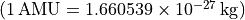

nexoclom2.atomicdata.atomicmass¶
Functions¶
|
Return the atomic mass of an atom or molecule. |
Module Contents¶
- nexoclom2.atomicdata.atomicmass.atomicmass(species)¶
Return the atomic mass of an atom or molecule.
This is really just a wrapper for periodictable but returns the mass as an astropy quantity.
Parameters
- species
Chemical formula requested species. See periodictable for formatting options.
Returns
The atomicmass of species as an astropy quantity with units = AMU . If
periodictablereturns a ValueError, None is returned.Examples
>>> from nexoclom2.atomicdata import atomicmass >>> print(atomicmass('Na')) 22.98977 u >>> print(atomicmass('H2O')) 18.01528 u >>> print(atomicmass('X')) WARNING: mathMB.atomicmass: X not found None